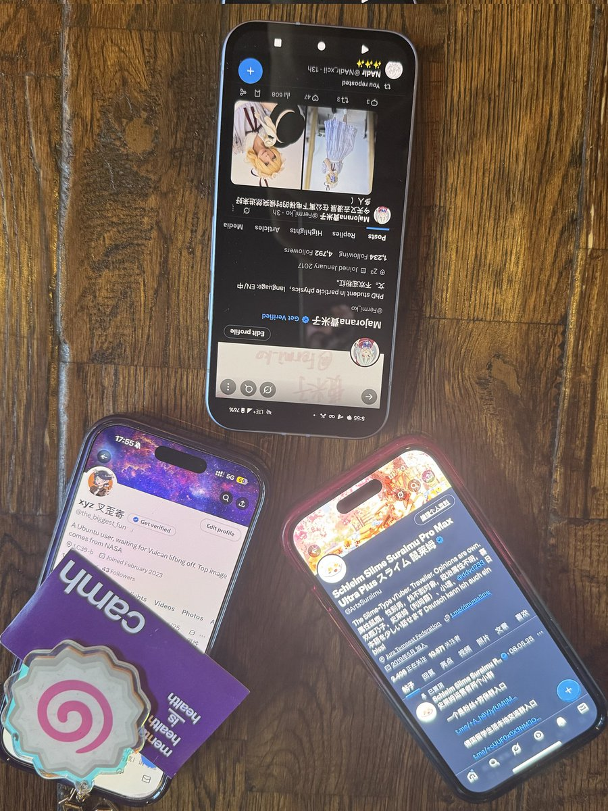

寒涟漪
@HANLIANYI331
@tokerumaisurii 我这边看您好像和她见过，所以问了一下

Majorana費米子
@Fermi_ko
漫展上碰到了两位推油@ArtsSuraimu @the_biggest_fun ，还借用了不愿意透露姓名的小虚空酱@tokerumaisurii 的手机（ https://t.co/dF70Ofac9e
小虚空🍥
@tokerumaisurii
@HANLIANYI331 不认识啊，这人号还在的时候就一直是屏蔽我的，可能我也屏蔽了对面来的。